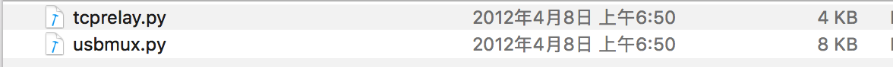

0x01 使用OpenSSH登录iPhone
首先在Cydia安装OpenSSH插件
SSL：Secure Sockets Layer，是为了网络通信提供安全及数据完整性的一种安全协议，在传输层对网络连接进行加密。
OpenSSL：是SSL的开源实现，绝大部分的https其实就是http+openssl
OpenSSH：远程登录，并且可以保证登录的安全性，安全性指的就是其加密是由OpenSSL完成的。
接着，需要保证手机和Mac是在同一个wifi环境下。在Mac上的终端里输入
ssh 用户名@手机ip地址
这时候会让你保存散列值，这个散列值是用散列算法把公钥信息算出来的。
输入yes后，会问你手机root账户的登录密码，密码默认是alpine。(通过passwd和passwd mobile修改两个账号的密码)
密码输入后，就已经成功登录到你的手机上了，如果想要退出登录，终端输入exit即可。
SSL
连接有三个步骤
建立安全连接
第一次登录时，iPhone会将其自己的公钥等信息发给Mac端，会问我们是否保存，即我们第一次连接手机时出现的提示。
/etc/ssh/ssh_host_rsa_key.pub -> ~/.ssh/known_hosts
客户端认证
基于密码的认证
基于密钥的认证
Mac端生成公钥和私钥(终端输入：ssh-keygen)，将公钥的内容追加到iPhone端(~/.ssh/authorized_keys，终端打开进.ssh目录：ssh-copy-id root@手机ip地址)
数据传输
0x02 使用USB登录iPhone
WIFI连接操作iPhone的效率低于直接用USB连接，所以我们有时候需要用USB进行登录手机的操作。
默认情况下SSH走的是TCP协议，所以需要用到WIFI环境，所以我们需要设置将SSH通过USB连接手机，一般我们Mac电脑都有一个usbmuxd服务程序，首先我们需要将Mac电脑自己ssh到自己电脑的端口，比如端口10010，然后通过usbmuxd将这个10010端口映射到iPhone的22端口，这样相当于ssh到了手机的22端口。
下载usbmuxd工具包：https://cgit.sukimashita.com/usbmuxd.git/snapshot/usbmuxd-1.0.8.tar.gz ，需要用到里面的tcprelay.py和usbmux.py脚本

映射端口，如果要保持端口映射就不能关闭或者结束当前终端命令
python tcprelay.py -t 22:10010
新开一个终端窗口，ssh连接到10010端口
ssh root@localhost -p 10010
这种方式建立的连接，也可以进行拷贝文件操作
pscp -P 10010 Mac上文件路径 root@localhost:iPhone文件夹路径
默认情况下，iOS终端不支持中文输入和显示 新建一个~/.inputrc文件，文件内容设置为
set convert-meta off ：不将中文字符转化为转义序列
set output-meta on ：允许向终端输出中文
set meta-flag on \ set input-meta on ：允许向终端输入中文
0x03 Cycript
首先在手机Cydia上安装Cycript插件，安装完成后会要求重启Springboard。
Cycript的常规操作，连接到手机后进行操作
cycript开启
- cycript
- cycript -p 进程id
- cycript -p 进程名称
退出cycript：ctrl + d
取消输入：ctrl + c
查询进程：ps
- ps -A：查询所有进程
- ps -A | grep 关键字，过滤进程
1. 简单实战
我们有如下页面，需要把红色的view隐藏掉
首先找到我们的app，此例中我们的进程是594
ps -A
连上我们的app，然后打印下UIApplication对象
cycript -p 594
如果想要打印所有成员变量
*变量(或#地址)
如果要递归打印所有子view
① view对象(或#地址).recursiveDescription().toString()
② choose(UILabel)：可以筛选出所有子view是UILabel的
③ 层级打印：[view _printHierarchy].toString()
至此，已经拿到我们要隐藏的Label的内存地址0x13ee12230，只需要设置hidden为YES即可
[#0x13ee12230 setHidden:YES]
更多使用，可以查看官方手册：http://www.cycript.org/manual/
2. 封装Cycript常用方法
比如想封装一个返回keyWindow的方法以及一个打印对应view所有子控件的方法，我们定义代码如下，函数前面加上exports表示调用的时候需要加上工具的名字，比如tool.keyWindow；如果不加exports，表示直接使用函数名调用。
1 | (function(exports){ |
保存的文件格式以cy结尾，并在文件保存到手机的/usr/lib/cycript0.9/com文件夹下，比如在此文件夹下新建一个文件夹myCycript，那么刚刚新建的cy文件保存到/usr/lib/cycript0.9/com/myCycript下
导入的时候@import com.myCycript.tool，并且进行使用

0x04 Reveal的使用
首先手机的Cydia里面搜索安装Reveal Loader
然后设置 —> Reveal —> Enabled Applications —> 勾选要调试的app
mac打开Reveal，菜单栏help —> Show Reveal Library in Finder —> iOS Library
打开库，找到里面的RevealServer
在iPhone的/Library下找到RHRevealLoader目录，如果没有就新建一个，并将之前的RevealServer文件复制到这个目录，并改名为libReveal.dylib
scp /路径/RevealServer root@iPhone地址:/Library/RHRevealLoader/libReveal.dylib
0x05 脱壳
脱壳分为硬脱壳和动态脱壳，硬脱壳是根据解密算法进行脱壳，也是官方的方式；动态脱壳是在内存中将程序导出。可以查看Mach-O格式来验证是否加壳
① Mach-O View：Load Commands —> LC_ENCRYPTION_INFO —> Crypt ID的值为0是未加密
② otool工具：otool -l 文件路径 | grep crypt
1. Clutch
首先下载 https://github.com/KJCracks/Clutch/releases ，将Clutch文件拷贝到手机的/usr/bin目录，使用方法如下
① clutch -i : 列出已安装的app
② clutch -d app序号或bundle id：脱壳
③ /private/var/mobile/Documents/Dumped下就是脱壳好的文件
2. Dumpdecrypted
首先下载https://github.com/stefanesser/dumpdecrypted。
在源代码目录下make进行编译，得到dumpdecrypted.dylib动态库文件。将这个文件拷贝到手机的/var/root目录下，使用方法如下
① 终端进入/var/root目录下
② 将这个动态库注入可执行文件中：DYLD_INSERT_LIBRARIES=dumpdecrypted.dylib 文件路径/文件.app/dump出文件的名字
③ 生成的.dycrypted就是脱壳后的文件
0x06 动态调试
动态调试需要用到debugserver，一开始是放在Xcode里面，当识别到手机设备时，Xcode会将debugserver放到手机的/Developer/usr/bin/目录下。
但是一般情况下debugserver缺少权限，无法调试其他的app，需要重签名加上2个调试相关的权限。
- get-task-allow
- task_for_pid-allow
先将/Developer/usr/bin/目录下的debugserver导出到mac，接着导出原来的签名权限
ldid -e debugserver > debugserver.entitlements
给debugserver.entitlements 加上get-task-allow和task-for-pid_allow权限。接着重新签名
ldid -S debugserver.entitlements debugserver
如果没有安装ldid：brew install ldid
也可以用codesign重签
① 查看权限信息：codesign -d —entitilements - debugserver
② 签名权限：codesign -f -s - –entitlements debugserver.entitlements debugserver
最后放到/usr/bin/目录，注意不是之前的那个/Developer/usr/bin。
我们在手机终端敲下debugserver，如果拒绝执行，需要加上运行权限
chmod +x debugserver
简单实战
我们想要在button的点击事件打个断点
找到进程id，此例是607。接着debugserver进行附加程序
debugserver *:10011 -a 607
表示的意思是：debugserver 地址:端口 -a 进程id
电脑上如果是wifi连接手机的话，命令如下：
process connect connect://手机ip地址:debugserver的端口号(即上面的607)
如果是usb映射连接手机的话，mac上需要多映射一个端口
python tcprelay.py -t 10011:10011
接着，lldb连接debugserver服务
process connect connect://localhost:10011
我们用私有方法_shortMethodDescription找到控制器当下所有的方法
po [[UIApplication sharedApplication].keyWindow.rootViewController _shortMethodDescription]

我们找到了一个buttonClick的方法，我们设置断点
b buttonClick
我们输入c，让程序继续运行，然后点下按钮，发现我们的方法被断下了
lldb其他命令
- br l ：查看所有断的点
- br del 8：把标号为8的断点删除
- b name：所有方法叫name的都下断点
- b -[NSString stringWithFormat:]：给NSString类的stringWithFormat方法下断点
- br s -S count：给所有selector为count的方法下断点
- br s -a：内存地址断点
- s：源码级别单步执行，遇到子函数进入
- si：单步执行，遇到子函数进入
- n：源码级别单步执行，遇到子函数不进入
- ni：单步执行，遇到子函数不进入
- f：退出子函数
- image lookup –address 内存地址
- image list -o -f：查看当前进程中的所有模块，一般第一个使我们的主程序，会出现两个值，左边的是ASLR偏移地址，右边是偏移后的地址。右边减去前面就是hopper查看到的基地址
参考页面：http://lldb.llvm.org/lldb-gdb.html
更多私有函数
- recursiveDescription：按层次打印视图结构，递归方法，所以子视图下的子视图层级也会被打印
- _printHierarchy：直接打印某个view的信息
- _autolayoutTrace：recursiveDescription的简化版，去掉了view的相关描述
- _ivarDescription：所有成员变量的名字和值
- _methodDescription：打印对象的属性、实例方法和类方法
0x07 theos
1. 修改Mac的环境变量
新建一个theos目录，此例中我们为~/Documents/theos
编辑配置文件
vi ~/.bash_profile新加入如下两行内容
export THEOS=~/Documents/theosexport PATH=$THEOS/bin:$PATH使环境变量生效
source ~/.bash_profile
2. 下载theos
下载到我们刚才的~/Documents/theos目录
git clone --recursive https://github.com/theos/theos.git $THEOS
3. 新建一个Tweak项目
新建一个目录存放项目，本例中使用~/Documents/hack，进入该目录后输入命令
nic.pl
我们选择序号11
① 项目名称，随便写
② 项目ID，随便写
③ 作者，随便写，不写直接回车的话默认选择Mac用户名
④ 要被hack的项目Bundle ID，可以用Cycript找到你要项目的Bundle ID
⑤ 安装后要关闭的程序列表，直接回车即可
4. 编辑Makefile
打开Makefile，添加两个变量说明是通过什么ip和什么端口来访问手机
- THEOS_DEVICE_IP
- THEOS_DEVICE_PORT
1 | export THEOS_DEVICE_IP=127.0.0.1 |
每次操作嫌麻烦的话，也可以直接到~/.bach_profile中添加。
5. 安装
安装到手机，我们需要三个步骤：编译 –> 打包为deb –>安装
编译：make
如果装了多个Xcode可能会导致make报错，需要制定Xcode
sudo xcode-select –switch /Application/Xcode.app/Contents/Developer
如果继续报错，清理下之前的缓存：make clean
打包：make package
打包的时候如果遇到错误：
那就是压缩问题，改成gzip压缩就可以了
修改dm.pl文件，
vim $THEOS/vendor/dm.pl/dm.pl。用#号注释掉use IO::Compress::Lzma;和use IO::Compress::Xz;修改deb.mk内的压缩方式为gzip
$ vim $THEOS/makefiles/package/deb.mk_THEOS_PLATFORM_DPKG_DEB_COMPRESSION ?= gzip
安装：make install
6. 演示
做个简单demo，我们如下图有5个cell，要求新增2个cell，分别展示6娃和7娃。
我们在我们的Tweak项目里，打开Tweak.xm文件，编写代码如下
1 | %hook ViewController |
安装到手机后，会需要确认两次手机root用户的密码
看下我们软件的变化，我们已经完成了我们的需求。即使重启app，也会一直生效。
theos常用语法：
%hook：与%end配对，表示hook的类名
%orig：调用原来的实现
%new：新建类或方法
%log：打印到控制台
%property：新加属性
0x08 Frida
1. 安装
Mac的安装
sudo pip install frida
iPhone的安装
① 添加源：https://build.frida.re/
② 源加完后，搜索Frida进行安装
2. 使用
所有进程：frida-ps -U
附加进程：frida -U 进程名字